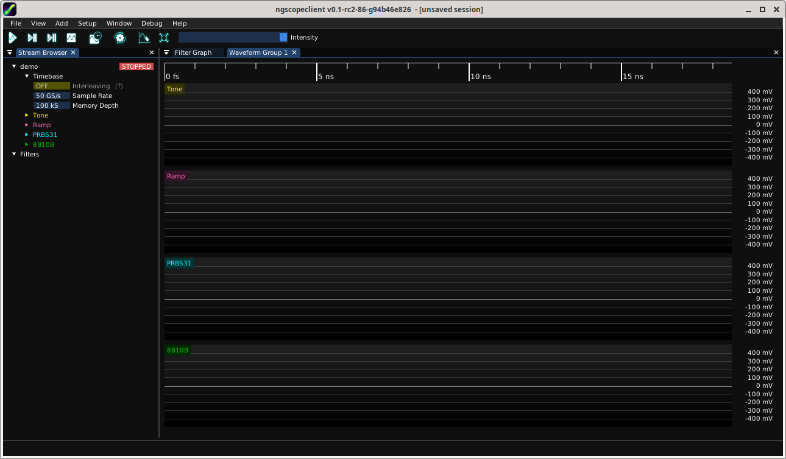
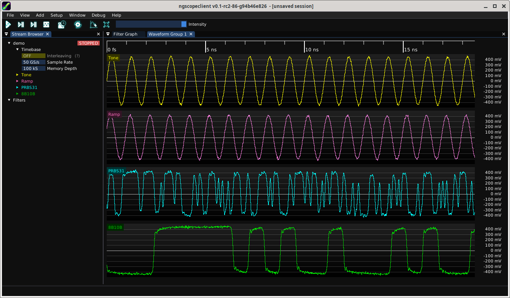
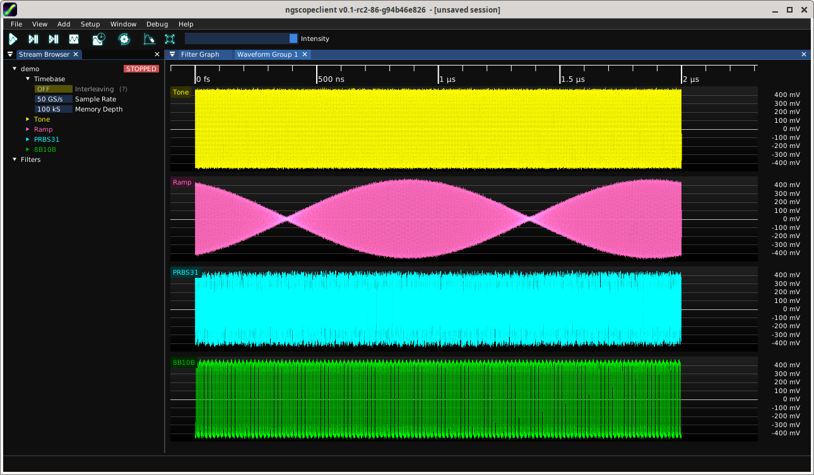

This section contains step-by-step examples to help you familiar yourself with the basics of using
ngscopeclient.
Many of them can be done offline using the built-in demo oscilloscope or saved example waveform
datasets - no lab access required!
4.1 The Basics
Lab requirements: None, can be performed offline
Learning goals: Navigating the ngscopeclient UI and performing common operations
4.1.1 Connecting to an Oscilloscope
We need to be connected to an instrument to do much of anything useful. Let’s use the built-in demo
scope for that.
1.
Start with a new, empty ngscopeclient session
2.
Select Add / Oscilloscope / Connect... from the top menu.
3.
Select the “demo" driver and “null" transport. Leave the path blank, since the demo scope
doesn’t need any connection information.
4.
Give the demo scope a nickname of your choice. This will be used to disambiguate scope
channels and properties dialogs if you have more than one instrument connected, as well as
to let you reconnect to the instrument quickly in the future.
Figure 4.1: Connection dialog
5.
Click the “add" button. You should be presented with an oscilloscope view showing four empty
channels stacked on top of each other.

Figure 4.2: Application window after connecting to demo scope
4.1.2 Acquiring Waveforms
Looks pretty boring! Let’s grab some waveforms so we have something to look at.
Note: The current demo scope is a simplistic instrument that doesn’t implement realistic
trigger semantics, so most of the usual trigger settings you might expect from real scopes
(adjusting trigger level, horizontal position, selecting type of edge or condition) aren’t available. It
will always trigger immediately when armed and return waveforms at the same horizontal
position.
1.
Press the “single trigger" button (second from left on the toolbar). You should see waveforms
appear in each channel.

Figure 4.3: Our first waveforms
2.
Press the “normal trigger" button (leftmost on the toolbar). You should see the waveform display
begin updating live.
3.
Press the “stop" button (fourth from left on the toolbar) to stop acquiring waveforms.
4.1.3 Navigating the Y Axis
All of the waveforms in the demo scope are centered around zero volts and just the right amplitude to fill
the view. But in real life we’re usually not that lucky. Let’s try moving one of the waveforms
around.
1.
Move the mouse over the Y axis at the right side of one of the plots.
2.
Click and drag with the left button to move the waveform vertically (adjusting frontend offset).
3.
Scroll with the mouse wheel to scale the waveform vertically (adjusting frontend gain).
Figure 4.4: Demo channel after making some gain and offset tweaks
4.1.4 Navigating the X Axis
The timebase in ngscopeclient is decoupled from the viewport, so you can zoom and pan arbitrarily
in the X axis without changing timebase settings.
Although we’ve only been looking at a \(25 ns\) wide window of the waveform so far, the default settings for
the demo scope are 100K points at 50 Gsps (\(2 \mu s\) record length). Let’s explore the rest of the
waveform.
(a)
Move the mouse over the main plot area and scroll with the mouse wheel to zoom in or
out, centering at the mouse cursor position.
(b)
Move the mouse over the timeline at the top of the viewport and drag with the left
button to move the waveform side to side without changing zoom.

Figure 4.5: Demo session after zooming out to show entire waveform